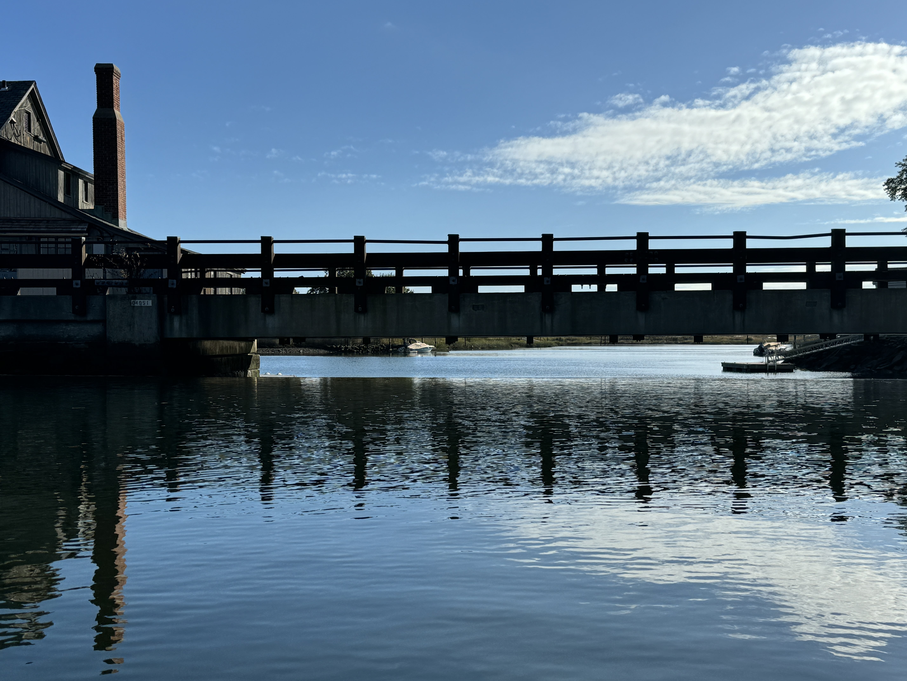
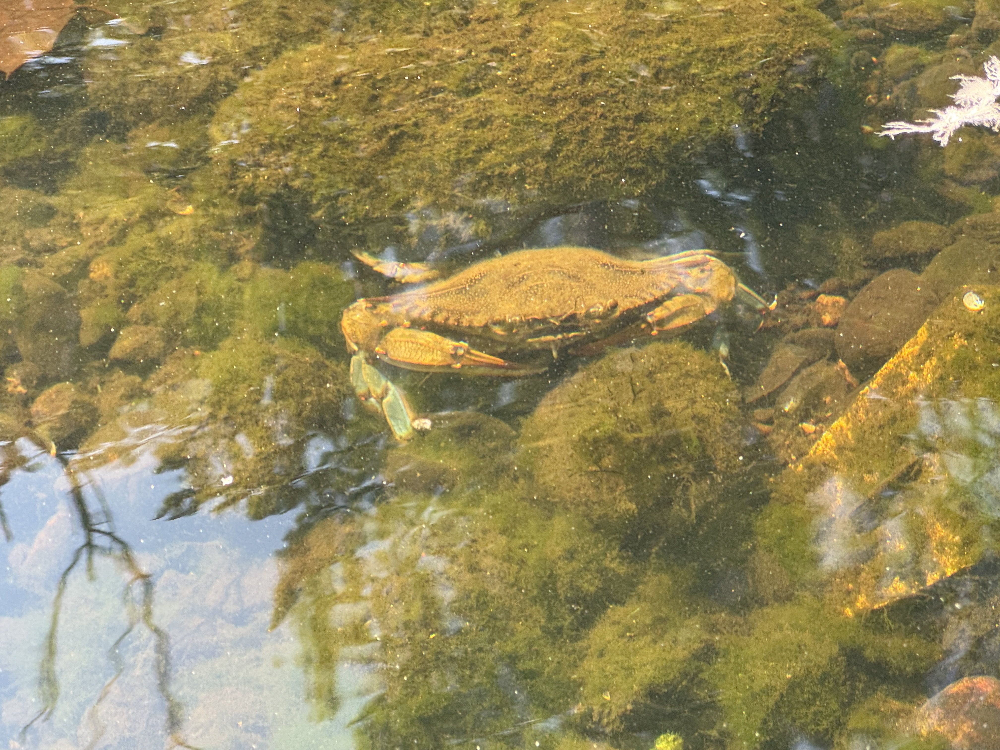

Southport · Fairfield County
Protecting the Mill River Estuary
A living tidewater where river meets harbor — and a 300-year-old dam worth saving. Help us preserve it for the generations to come.

Southport · Fairfield County
A living tidewater where river meets harbor — and a 300-year-old dam worth saving. Help us preserve it for the generations to come.
Formed for charitable and educational purposes under Section 501(c)(3), the Foundation exists to preserve, protect, restore, and beautify this unique stretch of waterway — from Perry’s Mill Pond downstream through upper Southport Harbor — for the benefit of the public and for future generations.
Four pillars of a healthy estuary

Alternating saltwater tides and the river’s fresh flow create a brackish ecosystem. Maintaining water levels — by restoring the historic Tide Mill Dam — keeps that balance and the estuary’s future secure.

We aim to ease passage for migrating herring, alewives and eels, and to support blue crabs, diamondback terrapins and countless invertebrates that mature in these sheltered shallows.

Native marsh grasses trap sediment and runoff. Replanting them — and reducing sedimentation in the Upper Harbor — protects breeding grounds and adds to the area’s natural beauty.

Bald eagles, ospreys, cormorants, swans, blue herons and egrets all call this estuary home. As its health improves, so does theirs.

For more than three centuries the Tide Mill Dam has held back the sea and shaped this estuary. Years of disrepair — worsened by the ice floes of winter 2025/2026 — have lowered water levels and let sediment accumulate. Repairing the dam, in coordination with CT DEEP, the Army Corps of Engineers and the Town of Fairfield, is our first and most urgent task.
We are only stewards of this special place, holding it in trust for those who come after us. Whether through a charitable gift, volunteer time, or professional expertise, your support helps restore the dam and protect this living estuary.